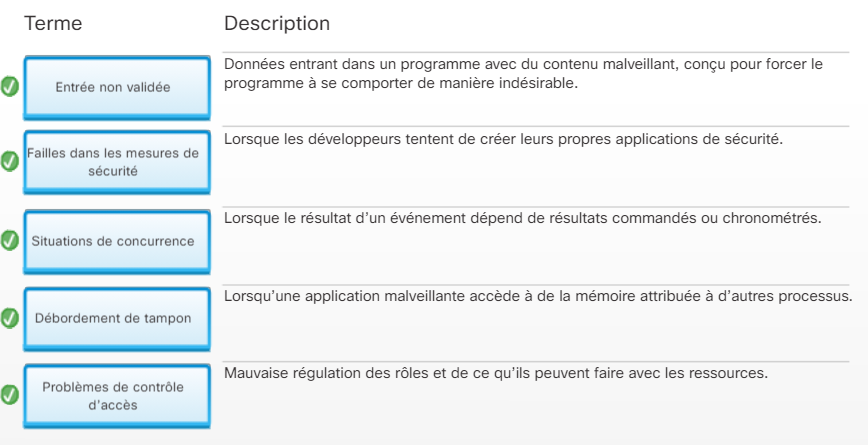

Les types de logiciels malveillants
Un malware (malicious software) est un programme conçu pour nuire à un système. Il en existe plusieurs catégories, chacune avec un mode d'action différent. Dans le cadre du cours Cisco NetAcad, on a étudié les principaux types et leurs caractéristiques.
Ingénierie sociale
L'ingénierie sociale, c'est manipuler une personne pour qu'elle fasse quelque chose ou divulgue des informations. Le phishing (hameçonnage) en est l'exemple le plus répandu : un faux email qui imite une banque ou un service connu pour voler des identifiants.
Vulnérabilités et exploits
Une vulnérabilité, c'est une faille dans un logiciel ou un système. Un exploit, c'est un programme qui tire parti de cette faille. La gestion des vulnérabilités passe par deux choses : appliquer les mises à jour rapidement, et surveiller les CVE (Common Vulnerabilities and Exposures) publiées.
Cisco Networking Academy — module sécurité
On a travaillé sur le module Cybersecurity Essentials de Cisco NetAcad. Il couvre les types d'attaques, les protections à mettre en place, et les bonnes pratiques en entreprise. Les exercices se font sous forme de QCM interactifs sur la plateforme Cisco.
